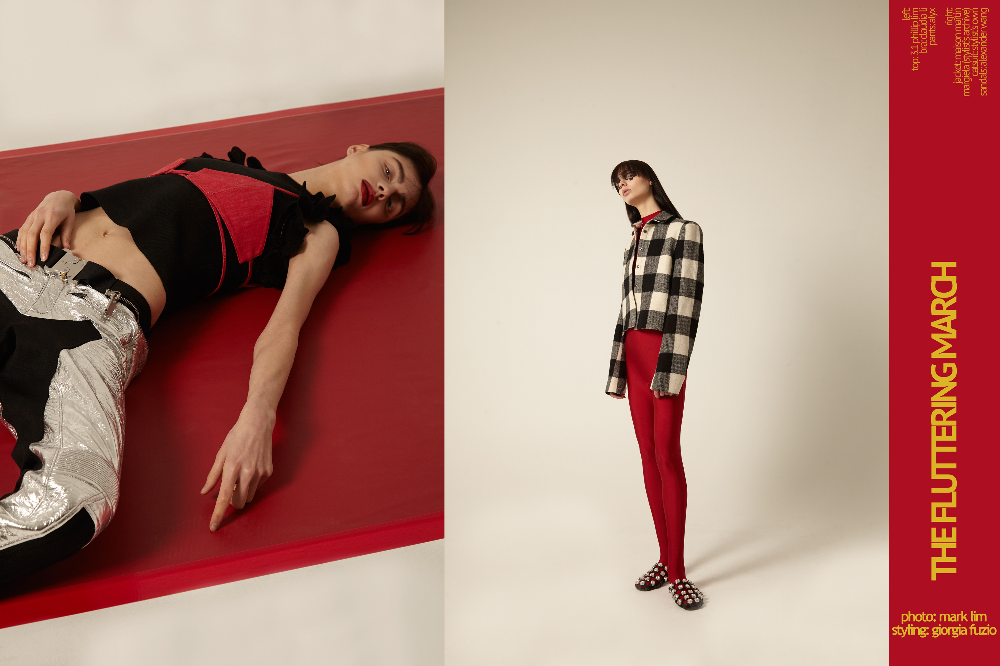
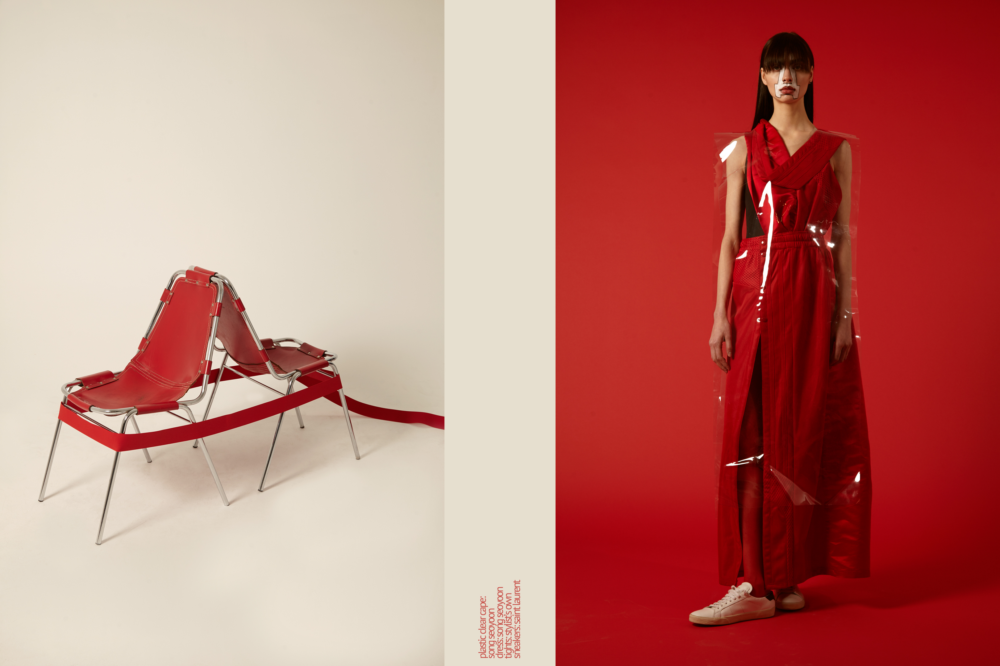

use arrow keys for beautiful viewing
PLEASURE




nicotine is a fashion and art magazine
editor in chief/creative director
mark lim
&
lizzy oppenheimer
design director
meg kalinowski
developer
aellon krider
the notion of time is a human construct. i’ve lived in america now for 13 years. but i also live in new york city, a giant cesspool of hope and ambition. people couldn’t care less about where you’re from, only if you can spare some change or if you have an extra cigarette. and if you don’t you’re basically a piece of shit. i’ve said it before and i’ll say it again, i will never have an extra cigarette, i plan on smoking all of them.
new york city as great as it is, is not emblematic of america, it’s an idealized vision of what america is to the rest of the world. it is the center and the whole. and so we who live here, live in the safety and ignorance of our own walled in utopia.
through work and play i’ve been to many different parts of the country, and have experienced racism first hand, granted i am asian so it’s not quite the same, but it always is a strange feeling. some racist comments however, are actually compliments, because who doesn’t think bruce lee is awesome? or the karate kid? who incidentally was not asian, but i’ll take it over looks of disgust or confusion any day. the concept of racism isn’t unique to america, there will always be people that assume they’re better than others, and if they can’t actually come up with something tangible, then it has to be race.
as long as you keep it to yourself, we can all participate in this dance of pretense. just bottle that shit up.
but then it’s 2017 and murphy has decided that his law is going to come down hard. in a moment of true surrealism, i watched a family of villains claim the white house today. and not just any villainous family, a true 80s style b-movie dynasty of villainy. we have the evil tycoon, his foreign bride, the goonish sons, and the hidden mastermind daughter and son in law. classic. there’s even a kid named barron.
i hate to generalize, but if you can stomach a thin skinned, insecure, delusional, verbally impaired internet troll, or worse, champion him, you are at the very least an idiot. the very least. hillary sucked blah blah blah. sure, she did. but if you think that warrants the equivalent of a human swine occupying the highest position of power in this mortal world, then you my friend need to manage your issues.
so now because of this buffoon, bringing out the buffoonery in other people, i worry. i worry about stepping outside of any city here, i worry about road trips, i worry i won’t be able to travel to small towns and make people uncomfortable with my presence. i’ve never cared much for politics, i’m self centered that way. but this guy, man, this guy. he doesn’t even bother to lie convincingly, he just let’s it drool out of his mouth. and because of his constant discrediting of the media he manages to get away with it. genius or obnoxious? i don’t know.
anyway. segue.
the notion of time is a human construct. a measure of limitation. it begins with a conception, a birth, a spark, and it ends only in silence. and while i can’t say nicotine will go on forever, i can say that we’ve been here for a measure of 5 years and 8 months, and now here we are, issue 17. a new year, a new president, a new issue, and a new website.
we’ve decided on a few visual changes, a few navigational changes, designed intentionally to be creatively confusing but utterly arresting. the work speaks for itself, in the voice of an angel, that fell to earth, and got dragged to hell. morbid. the work speaks in a morbid tone. makes sense. who knows? what i mean to say is that all the visuals will be burned into your mind, morbidly.
it’s weird to speak about a magazine given the current climate, so i’ll leave you with this. despite the barrage of fascism that is now getting forced down the throat of all reasoning, there is a slight glimmer or hope. because whenever there is oppression and censorship, whenever the human race is met with such unthinkable tyranny and injustice, a movement of creativity responds. and while that hardly changes anything, it excites me a great deal, and i can’t wait to see and hear all that comes from it.
the notion of time is a human construct. a measure of limitation. you have 4 years you piece of shit.
use arrow keys for beautiful viewing
PLEASURE